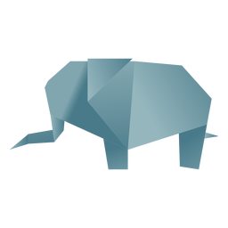

Camel
- Camels have three sets of eyelids and two rows of eyelashes to keep sand out of their eyes.
- Camels are very strong and can carry up to 900 pounds for 25 miles a day.
- When a camel finally does find water, he can drink up to 40 gallons in one go.

Chameleon
- Skin crystals enable them to change colour at will.
- Their eyes can swil around in two diffrent dirrections.
- There are more then 160 species of chameleon in the world.

Panda
- Giant pandas spend 10-16 hours a day feeding, mainly on bamboo.
- On average, pandas poo 40 times a day.
- They are great camoflage for there envoirnment.
- Pandas need at least 2 different bamboo species in their range to avoid starvation

Elephant
- They're the worlds LARGEST land animal.
- There tusks are actualy teeth.
- They communicate through vibrations.
- Elephants never forgets.